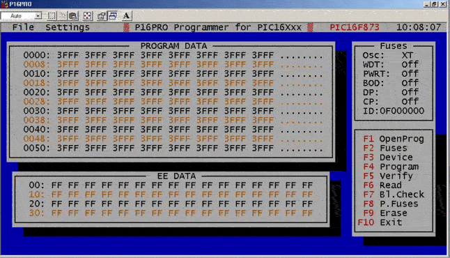
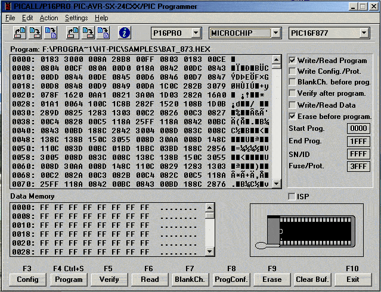

CE QU'IL FAUT POUR PROGRAMMER LES MICRO-CONTROLEURS PIC:
P16PRO
LE PROGRAMMATEUR:
Il existe un grand nombre de programmateurs de PIC, tous vos distributeurs habituels de composants peuvent vous en vendre un. Le construire permet de faire une économie substantielle et surtout d'être en mesure de le dépanner en cas de besoin. Celui que je vous propose présente l'avantage d'être peu coûteux pour la partie hard mais également pour le soft. L'électronique ne nécessite que quelques transistors et régulateurs de tension que vous trouverez dans vos fonds de tirroir. Il peut être réalisé sur circuit imprimé ou, du fait de sa simplicité, sur une plaque d'essais pastillée. Ce programmateur est le P16PRO de Bojan Dobaj (http://www.picallw.com/), la version pour PIC de 8 à 40 broches est la plus universelle à condition de lui adjoindre un support à force d'insertion nulle (ZIF) permettant l'insertion des boîtiers DIP de 8 à 40 broches. La réalisation ne pose pas de problème particulier. Attention cependant au brochage des régulateurs de tension. Le programmateur peut être également acheté monté ou en kit à l'adresse web ci-dessus.
Télécharger le schéma au format Acrobar Reader: p16pro40.pdf
Une autre version de programmateur (le PICALL) permet de programmer une plus grande variété de PIC ainsi que des micro-contrôleurs ATMEL, SCENICS SX et des EEPROM séries.
LE SOFT:
Version DOS (fonctionne également sous Windows 3.x 9.x):
P16PRO est une version DOS du logiciel qui ne pilote que le programmateur P16PRO. L'utilisation est simple, le fonctionnement est garanti même sur des PC anciens. Pas de configuration compliquée à mettre en oeuvre.

La version sous Windows (Windows 3.1x, 9x, NT, 2000, XP):
Le logiciel sous Windows qui pilote le programmateur s'appelle PICALLW. Il commande à la fois les programmateurs P16PRO et PICALL

La prise en main est rapide, l'environnement est cohérent. Le logiciel est configurable pour le P16PRO, pour le PICALL et pour d'autres versions de programmateurs. Je vous le recommande également pour son modeste prix. (Voir le site picallw.com)